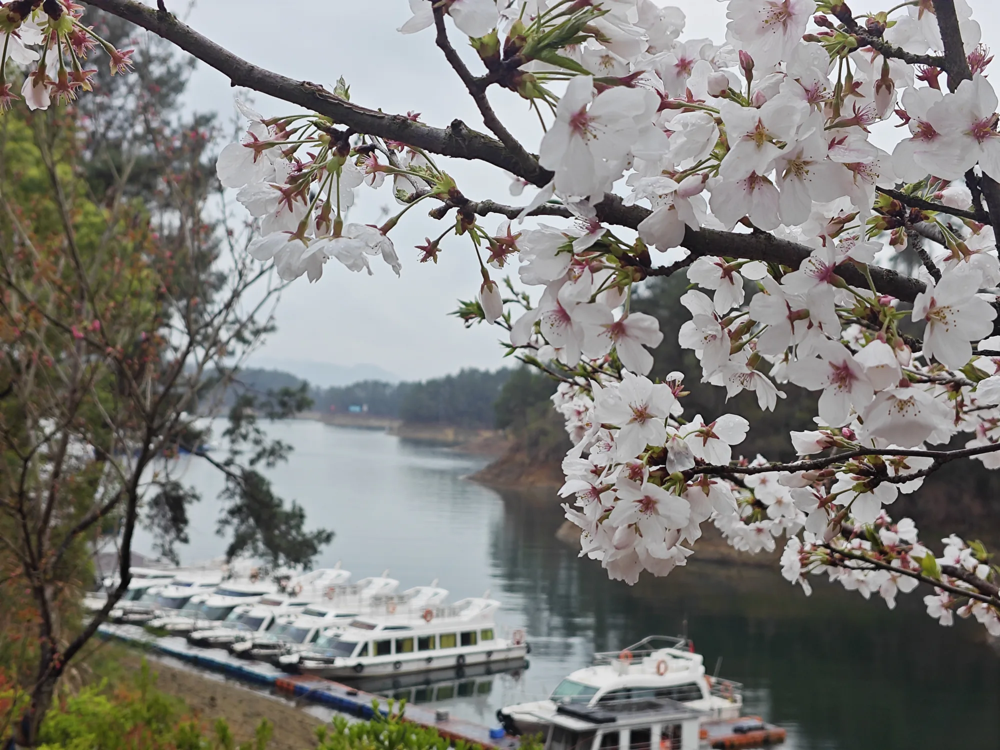

QIANDAO LAKE
千岛湖
周末来到千岛湖，看湖面、远山与湖边的春花。
2025.03.28 — 03.30铁路 · 出租车
放大地图查看照片
铁路 · 出租车铁路 / 轨道交通打车 / 包车 / 团体巴士
公共交通按线路或途经站点绘制，均为行程示意；未记下的具体班次留空。航班连线非实际飞行轨迹。
每日记录 3 天
DAY 01
抵达千岛湖
铁路、出租车乘列车来到千岛湖。
→→
DAY 02
湖畔春景
步行湖面与远山笼罩在薄云下，湖边已有春花开放。
DAY 03
千岛湖返程
出租车、铁路继续在湖边停留后，前往千岛湖站乘列车返程。
→→
列车上的一餐03.28 · 18:58 千岛湖站夜晚抵达千岛湖站03.28 · 20:00 千岛湖站千岛湖畔的早晨03.29 · 09:13 千岛湖薄云下的湖面与群山03.29 · 09:14 千岛湖千岛湖的春日水色与远山03.29 千岛湖春花掩映着湖边03.29 · 15:28 千岛湖湖畔初开的粉色花朵03.29 · 15:33 千岛湖隔着湖面望向远岸03.29 · 15:48 千岛湖花枝与湖上的小岛03.29 · 15:49 千岛湖安静的湖岸03.29 · 15:50 千岛湖返程时来到千岛湖站03.30 · 15:39 千岛湖站铁路沿线的村庄与山03.30 · 16:27 千岛湖站 暂无照片。